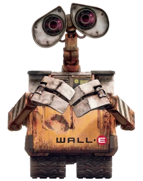

Oficina de Introducao aos
Sistemas Embarcados
Tres dias ligando codigo a coisas que se mexem, acendem e reagem ao mundo. Do primeiro LED que pisca ate um sistema embarcado completo, feito em equipe.
O que e a oficina¶
Sistema embarcado e um computador que vive dentro de outra coisa: o carro, a geladeira, o equipamento medico, o semaforo da esquina. Ele nao tem tela nem teclado — tem sensores para perceber o mundo e atuadores para agir sobre ele.
Nesta oficina voce vai escrever o codigo e ver o efeito no mundo fisico na mesma hora. Nada de simulacao: a placa esta na sua frente, o LED acende de verdade e o motor gira de verdade.
Comecamos no primeiro dia com um LED piscando — o "ola, mundo" dos embarcados — e terminamos com as equipes integrando sensores, display e motores numa aplicacao completa.
Para quem e¶
Para qualquer pessoa. A oficina e gratuita, aberta ao publico e nao exige conhecimento previo nem equipamento proprio.
- Nao e preciso saber programar, nem ser da Engenharia, nem ter mexido em eletronica antes
- As equipes sao mistas, de modo que quem esta comecando fique junto de quem ja tem experiencia
- Metade das vagas e reservada prioritariamente a mulheres, para ampliar a participacao feminina na computacao e na engenharia
- Todo o material — placas, sensores, motores e componentes — e disponibilizado pela FCTE
- Estudantes de ensino medio e de outras instituicoes sao muito bem-vindos
Quando e onde¶
| Dias | 22, 23 e 24 de setembro de 2026 |
| Horario | 14h as 17h |
| Carga horaria | 9 horas |
| Local | Laboratorio MOCAP — FCTE, Campus UnB Gama |
| Vagas | 30 |
| Plataforma | ESP32, programada pela Arduino IDE |
| Codigo SIGAA | EV1352-2026 |
Quem faz acontecer¶


O caminho dos tres dias¶
O que voce leva daqui¶
Ao final da oficina espera-se que voce compreenda o que caracteriza um sistema embarcado e reconheca suas aplicacoes no cotidiano; consiga programar um microcontrolador para ler entradas e acionar saidas; tenha exercitado a comunicacao com perifericos e o controle concorrente de tarefas; e conclua a atividade com uma aplicacao funcional desenvolvida em equipe.
Todo o material fica publicado aqui — slides, codigos e explicacoes — para voce levar para casa e continuar.